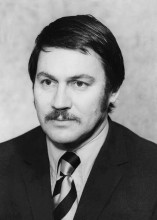

Please note: the AAS Obituaries are temporarily being hosted on this website while their full content is being ingested into the PubPub publishing platform newly adopted by the Bulletin of the American Astronomical Society. When the migration is complete, your existing links will take you to the final, migrated content. Contact peter.williams@aas.org with any questions.
Bradford A. Smith (1931-2018)
A personal remembrance by Carolyn Porco.
Bradford Adelbert Smith, planetary astronomer best known as the lead imaging scientist on the Voyager mission who guided the world during the 1980s on a visual odyssey across the outer solar system, passed away peacefully at his home in Santa Fe, NM on 3 July 2018 from complications from myasthenia gravis, an autoimmune disorder. He was 86.
Brad was born on 22 September 1931 in Cambridge, Massachusetts, to Percival and Mary Smith, and grew up in nearby Winchester, where he expressed an early interest in chemistry and astronomy. He graduated in 1954 from Northeastern University with a BSc degree in Chemical Engineering and received a PhD in Astronomy from New Mexico State University in 1973. During the course of his career, he held the academic appointments of Associate Professor of Astronomy at New Mexico State University, Professor in both the Department of Planetary Sciences and the Department of Astronomy at the University of Arizona, and finally Research Astronomer at the Institute for Astronomy, University of Hawaii at Manoa.
Despite his early training as a chemical engineer, Brad's first love was astronomy. After college, he spent two years as a private in the U.S. Army, working as an astronomer in the Army Map Service at the White Sands Missile Range in New Mexico, where he began a long and productive association with Clyde Tombaugh, the discoverer of Pluto. His first astronomical project was a search (with negative results) for possible natural satellites of the Moon at Lowell Observatory, with Tombaugh, during the lunar eclipse of 17-18 November 1956.
Soon thereafter, he followed Tombaugh to New Mexico State University and in 1958 established there a program of systematic, ground-based telescopic imaging of the planets in support of the robotic planetary missions on which the newly formed NASA would soon embark. This was the dawn of the space age, a time when planetary science as a disciplined study of the planets was only just taking shape. Brad’s cutting-edge knowledge and experience in imaging the planets earned him membership in that first generation of explorers chosen to execute humankind’s initial reconnaissance of the solar system.
Throughout the 1960s, 70s, and 80s, Brad was involved in many U.S. and international space missions: the Mariner 6, Mariner 7, Viking, and Soviet Phobos missions to Mars; the Soviet Vega mission to Halley’s Comet; and the Wide Field/Planetary Camera team for the Hubble Space Telescope. He rose to deputy team leader for the imaging investigation on Mariner 9, the first spacecraft to orbit another planet (Mars) in 1971, and from 1972 through 1989, served as the imaging lead on the Voyager mission to Jupiter, Saturn, Uranus, and Neptune. He was four times awarded the NASA Medal for Exceptional Scientific Achievement for his contributions to space science. Asteroid 8553 (bradsmith) is named in his honor.
While still deeply involved in spaceflight, Brad continued to push the limits in Earth-based astronomical imaging. In early 1976 he and his colleagues were the first to use a CCD detector on an astronomical telescope, yielding the first high-resolution infrared images of Uranus and Neptune. Later, in 1984, he would become the first to use a coronagraph on the star Beta Pictoris, an observational breakthrough that led to his discovery of the star's circumstellar debris disk. This was the first direct evidence of a planetary system beyond our own and a finding that initiated the observational study of extrasolar planetary systems, today the most productive field in astronomy.
Within a career of scientific firsts, Brad’s most renowned role was his leadership of the imaging team on the most celebrated interplanetary mission of them all, the Voyager mission to the outer planets. Voyager was different than any mission that had come before. It was a long-duration, uncertain, risky undertaking to journey across and eventually beyond the solar system, coursing through one giant-planet system after another. The mission became iconic in its scope and significance — more rite of passage than expedition, more mythic than scientific. Those extraordinary images of alien worlds and stunning marvels, so unexpected, all never before seen, and that pre-cognitive sense of being there that these images evoked, were the means by which laypeople the world over felt connected to a grand pilgrimage, with Brad as head pilgrim, rendering meaning along the way. And he excelled at it: well-spoken, commanding, knowledgeable, witty, with movie star good looks. Central Casting could not have done better.
At the same time, he was very much responsible for the phenomenal scientific success of the whole imaging investigation. He was one of few who had the foresight to recognize that the satellites and, later, the rings of the outer planets would be as fascinating as the planets themselves, and saw the need for a high-resolution imaging capability to address both. These realizations drove him to insist on a change in the optics of the Voyager cameras and to hand-appoint to the original NASA-selected imaging team (against the wishes of NASA officials) additional scientists with expertise in atmospheric science, geology and planetary rings, as well as those directly involved in ground-based studies of the bodies that Voyager would visit, to take advantage of the imaging system's increased capabilities. And he was gender blind: three of those additions, from 1977 to 1988, were women, including myself. He simply went after the best.
Brad was worldly and engaged in life in ways many of his colleagues were not. Maybe it was this that moved him to extend a hand, again without official approval, to scientists from other countries at a time when it was rare to do so. For the Neptune encounter, he invited onto the imaging team Andre Brahic from France and Sasha Basilevsky from the Soviet Union. The latter was a bold gesture, considering that the Cold War had not yet ended. It was Sasha who proclaimed that the surface of Neptune’s moon, Triton, was like frozen vodka!
Many of us chosen for the Cassini mission back to Saturn were among those Brad added to the Voyager imaging team. I surely would not have won the position of imaging team lead on Cassini had it not been for his selection of me for Voyager. He might have had a reputation for being unapproachable and intimidating, but under it all, away from the politics and pressure, he was a gentleman, loved by many for his encouragement, open-mindedness, and willingness to listen. He was there for me through some very difficult and punishing times over the 27 years of Cassini. He was one who knew firsthand what the job of imaging team leader entailed, what deep resentment from colleagues came with the very public-facing nature of the job, and how politically charged it could be. Through it all, he remained a steadfast supporter.
Once Cassini reached Saturn, Brad would occasionally send me communications that only someone who had held the seat in an earlier era could send.
During our first satellite encounter in mid-2004 with Saturn’s outer moon, Phoebe, Brad commented: "There simply are no adequate words to describe those pictures! Now I know how Tom Gehrels [imaging team leader for Pioneer 11 at Saturn] felt when he saw the Saturn Voyager images."
On our findings at Enceladus in 2005: "Unbelievable! I haven't seen such a tormented satellite since Miranda [moon of Uranus]. You certainly are doing fantastic work! It brings back memories of past exciting times."
And he was still there, cheering, only days before Cassini’s end: "I can remember my own emotions as Voyager 2 headed away from Neptune, ending the imaging phase of the mission. So, I can only imagine the emotion you will be going through seeing your beloved Cassini die after all your years together."
In the history of human life, Bradford A. Smith was consequential in the most meaningful of ways. He will be fondly remembered.
Brad is survived by his wife, Diane McGregor, his three children, Kari Rasmason of Albuquerque, NM, Hillary Tolmen of Cape Coral, FL, and Randall Smith of Albuquerque, five grandchildren, and five great-grandchildren. A memorial service will be held at the Lunar and Planetary Lab at the University of Arizona on September 22, 2018. For more information: http://shorelips.net/bradsmith/memorial-service.html
Obituary Written By: Carolyn Porco (Mill Valley, California), with the assistance of Diane McGregor (Santa Fe, New Mexico), William Sheehan (Flagstaff, Arizona), and Faith Vilas (Seabrook, Texas).
Carolyn Porco was a member of the Voyager Imaging Team from October 1983 through the end of mission in 1989. She has been the imaging team leader on the Cassini mission at Saturn since November 1990.
Obituary written by: Carolyn Porco
BAAS Citation: BAAS, 2018, 50, 017